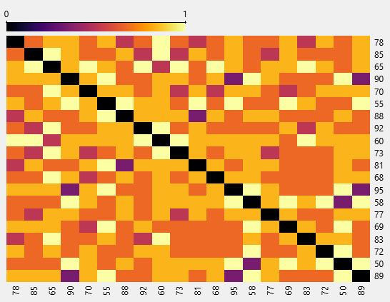

Pengukuran Jarak/Similarity Berdasarkan PPT (Semua Metode)#
Notebook ini menghitung ukuran dissimilarity/jarak dan/atau similarity untuk beberapa tipe data sesuai materi PPT:
Nominal: Simple Matching
Binary symmetric: Simple Matching
Binary asymmetric: Jaccard
Numerik: Minkowski Distance (Manhattan, Euclidean, Supremum)
Ordinal: Ranking → skala interval [0,1] → dihitung seperti numerik (interval-scaled)
Atribut campuran: gabungan jarak per-atribut (0/1 untuk nominal/biner, normalisasi untuk numerik, ranking+scaling untuk ordinal)
Cosine Similarity (opsional jarak: (1-\cos))
Setup: Load data & persiapan kolom#
Notebook ini memakai file Contoh_Data_Tipe_Data.xlsx dan kolom:
Nama (Nominal)
Kota (Nominal)
Jenis Kelamin (Biner) → binary symmetric
Status Kelulusan (Biner) → binary asymmetric
Tingkat Pendidikan (Ordinal) → diubah jadi ranking lalu skala [0,1]
Nilai Ujian (Numerik)
Import Library#
Library yang digunakan:
pandas → membaca data
numpy → operasi numerik
scikit-learn → menghitung distance
scipy → distance tambahan
gower → distance untuk data campuran
import numpy as np
import pandas as pd
from openpyxl import Workbook
# ===== CONFIG =====
INPUT_XLSX = "Contoh_Data_Tipe_Data.xlsx"
COL_NAME = "Nama (Nominal)"
COL_CITY = "Kota (Nominal)"
COL_GENDER = "Jenis Kelamin (Biner)"
COL_EDU = "Tingkat Pendidikan (Ordinal)"
COL_SCORE = "Nilai Ujian (Numerik)"
COL_STAT = "Status Kelulusan (Biner)"
EDU_MAP = {"SMA": 1, "D3": 2, "S1": 3, "S2": 4}
# ===== LOAD =====
df = pd.read_excel(INPUT_XLSX)
names = df[COL_NAME].tolist()
n = len(df)
def pairwise_matrix(func):
M = np.zeros((n, n), dtype=float)
for i in range(n):
for j in range(n):
M[i, j] = func(i, j)
return pd.DataFrame(M, index=names, columns=names)
def idx_of(person_name: str) -> int:
matches = df.index[df[COL_NAME] == person_name].tolist()
if not matches:
raise ValueError(f"Nama '{person_name}' tidak ditemukan.")
return matches[0]
# encoding dasar
city = df[COL_CITY].astype(str).values
gender = df[COL_GENDER].map({"L": 1, "P": 0}).astype(int).values # symmetric
status = df[COL_STAT].astype(int).values # asymmetric 0/1
edu_rank = df[COL_EDU].map(EDU_MAP).astype(float).values # ordinal -> rank
score = df[COL_SCORE].astype(float).values # numeric raw
# normalisasi utk mixed (min-max)
score_min, score_max = score.min(), score.max()
score_norm = (score - score_min) / (score_max - score_min)
edu_min, edu_max = edu_rank.min(), edu_rank.max()
edu_norm = (edu_rank - edu_min) / (edu_max - edu_min)
# pasangan contoh
i = idx_of("Andi")
j = idx_of("Budi")
df.head()
| ID (Numerik) | Nama (Nominal) | Jenis Kelamin (Biner) | Tingkat Pendidikan (Ordinal) | Nilai Ujian (Numerik) | Status Kelulusan (Biner) | Kota (Nominal) | |
|---|---|---|---|---|---|---|---|
| 0 | 1 | Andi | L | SMA | 78 | 1 | Jakarta |
| 1 | 2 | Budi | L | S1 | 85 | 1 | Bandung |
| 2 | 3 | Citra | P | SMA | 65 | 0 | Surabaya |
| 3 | 4 | Dewi | P | S2 | 90 | 1 | Yogyakarta |
| 4 | 5 | Eko | L | D3 | 70 | 1 | Medan |
Metode 1 — Simple Matching (Nominal)#
untuk simpel matching bisa dihitung menggunakan hamming distance
Untuk atribut nominal (misal Kota)
jarak per atribut: \( d_{ij}(f)= \begin{cases} 0, & x_{if}=x_{jf}\\ 1, & x_{if}\neq x_{jf} \end{cases} \)
Output: matriks jarak nominal (0/1).
def d_simple_matching_nominal(i, j):
return 0.0 if city[i] == city[j] else 1.0
M_nominal_city = pairwise_matrix(d_simple_matching_nominal)
print("Contoh Andi vs Budi (Nominal Kota):", d_simple_matching_nominal(i, j))
M_nominal_city.iloc[:6, :6]
Contoh Andi vs Budi (Nominal Kota): 1.0
| Andi | Budi | Citra | Dewi | Eko | Fajar | |
|---|---|---|---|---|---|---|
| Andi | 0.0 | 1.0 | 1.0 | 1.0 | 1.0 | 1.0 |
| Budi | 1.0 | 0.0 | 1.0 | 1.0 | 1.0 | 1.0 |
| Citra | 1.0 | 1.0 | 0.0 | 1.0 | 1.0 | 1.0 |
| Dewi | 1.0 | 1.0 | 1.0 | 0.0 | 1.0 | 1.0 |
| Eko | 1.0 | 1.0 | 1.0 | 1.0 | 0.0 | 1.0 |
| Fajar | 1.0 | 1.0 | 1.0 | 1.0 | 1.0 | 0.0 |
Metode 2 — Binary Symmetric (Simple Matching)#
menggunakan hamming distance
Untuk biner simetris (mis. Jenis Kelamin), 0 dan 1 sama-sama penting → gunakan simple matching:
sama → 0
beda → 1
def d_binary_symmetric(i, j):
return 0.0 if gender[i] == gender[j] else 1.0
M_binary_symmetric = pairwise_matrix(d_binary_symmetric)
print("Contoh Andi vs Budi (Binary Symmetric JK):", d_binary_symmetric(i, j))
M_binary_symmetric.iloc[:6, :6]
Contoh Andi vs Budi (Binary Symmetric JK): 0.0
| Andi | Budi | Citra | Dewi | Eko | Fajar | |
|---|---|---|---|---|---|---|
| Andi | 0.0 | 0.0 | 1.0 | 1.0 | 0.0 | 0.0 |
| Budi | 0.0 | 0.0 | 1.0 | 1.0 | 0.0 | 0.0 |
| Citra | 1.0 | 1.0 | 0.0 | 0.0 | 1.0 | 1.0 |
| Dewi | 1.0 | 1.0 | 0.0 | 0.0 | 1.0 | 1.0 |
| Eko | 0.0 | 0.0 | 1.0 | 1.0 | 0.0 | 0.0 |
| Fajar | 0.0 | 0.0 | 1.0 | 1.0 | 0.0 | 0.0 |
Metode 3 — Binary Asymmetric (Jaccard)#
Untuk biner asymmetric, pasangan (0,0) diabaikan.
Jaccard similarity:
\( J=\frac{a}{a+b+c} \)
Jaccard dissimilarity (jarak):
\( d_J=1-J=\frac{b+c}{a+b+c} \)
Pada implementasi 1 atribut biner:
(0,0) → kontribusi 0 (diabaikan)
(1,1) → 0
beda → 1
def d_jaccard_asymmetric(i, j):
xi, xj = status[i], status[j]
if xi == 0 and xj == 0:
return 0.0
return 0.0 if xi == xj else 1.0
M_jaccard_asymmetric = pairwise_matrix(d_jaccard_asymmetric)
print("Contoh Andi vs Budi (Jaccard Status):", d_jaccard_asymmetric(i, j))
M_jaccard_asymmetric.iloc[:6, :6]
Contoh Andi vs Budi (Jaccard Status): 0.0
| Andi | Budi | Citra | Dewi | Eko | Fajar | |
|---|---|---|---|---|---|---|
| Andi | 0.0 | 0.0 | 1.0 | 0.0 | 0.0 | 1.0 |
| Budi | 0.0 | 0.0 | 1.0 | 0.0 | 0.0 | 1.0 |
| Citra | 1.0 | 1.0 | 0.0 | 1.0 | 1.0 | 0.0 |
| Dewi | 0.0 | 0.0 | 1.0 | 0.0 | 0.0 | 1.0 |
| Eko | 0.0 | 0.0 | 1.0 | 0.0 | 0.0 | 1.0 |
| Fajar | 1.0 | 1.0 | 0.0 | 1.0 | 1.0 | 0.0 |
Metode 4 — Ordinal: Ranking → [0,1] → Interval-scaled distance#
Atribut ordinal diubah ke ranking \(r_{if}\) , lalu dipetakan ke [0,1]:
\( z_{if}=\frac{r_{if}-1}{M_f-1} \)
Jarak ordinal (1 atribut):
\( d_{ij}=|z_{if}-z_{jf}| \)
def d_ordinal_scaled(i, j):
return float(abs(edu_norm[i] - edu_norm[j]))
M_ordinal = pairwise_matrix(d_ordinal_scaled)
print("Rank Andi, Budi:", edu_rank[i], edu_rank[j])
print("z Andi, z Budi:", round(edu_norm[i],4), round(edu_norm[j],4))
print("Contoh Andi vs Budi (Ordinal Pendidikan):", round(d_ordinal_scaled(i, j), 6))
M_ordinal.iloc[:6, :6]
Rank Andi, Budi: 1.0 3.0
z Andi, z Budi: 0.0 0.6667
Contoh Andi vs Budi (Ordinal Pendidikan): 0.666667
| Andi | Budi | Citra | Dewi | Eko | Fajar | |
|---|---|---|---|---|---|---|
| Andi | 0.000000 | 0.666667 | 0.000000 | 1.000000 | 0.333333 | 0.666667 |
| Budi | 0.666667 | 0.000000 | 0.666667 | 0.333333 | 0.333333 | 0.000000 |
| Citra | 0.000000 | 0.666667 | 0.000000 | 1.000000 | 0.333333 | 0.666667 |
| Dewi | 1.000000 | 0.333333 | 1.000000 | 0.000000 | 0.666667 | 0.333333 |
| Eko | 0.333333 | 0.333333 | 0.333333 | 0.666667 | 0.000000 | 0.333333 |
| Fajar | 0.666667 | 0.000000 | 0.666667 | 0.333333 | 0.333333 | 0.000000 |
Metode 5 — Minkowski Distance (Numerik)#
Minkowski:
\( d(i,j)=\left(\sum_{f=1}^{p}|x_{if}-x_{jf}|^h\right)^{1/h} \)
Special cases:
\(h=1\) : Manhattan (L1)
\(h=2\) : Euclidean (L2)
\(h\to\infty\) : Supremum (L∞)
X_num = score.reshape(-1, 1)
def minkowski(i, j, h: float):
diff = np.abs(X_num[i] - X_num[j]) ** h
return float(np.sum(diff) ** (1.0 / h))
def d_manhattan(i, j):
return minkowski(i, j, 1.0)
def d_euclidean(i, j):
return minkowski(i, j, 2.0)
def d_supremum(i, j):
return float(np.max(np.abs(X_num[i] - X_num[j])))
M_manhattan = pairwise_matrix(d_manhattan)
M_euclidean = pairwise_matrix(d_euclidean)
M_supremum = pairwise_matrix(d_supremum)
print("Contoh Andi vs Budi (|78-85|):", abs(score[i]-score[j]))
print("Manhattan:", d_manhattan(i,j))
print("Euclidean:", d_euclidean(i,j))
print("Supremum :", d_supremum(i,j))
M_euclidean.iloc[:6, :6]
Contoh Andi vs Budi (|78-85|): 7.0
Manhattan: 7.0
Euclidean: 7.0
Supremum : 7.0
| Andi | Budi | Citra | Dewi | Eko | Fajar | |
|---|---|---|---|---|---|---|
| Andi | 0.0 | 7.0 | 13.0 | 12.0 | 8.0 | 23.0 |
| Budi | 7.0 | 0.0 | 20.0 | 5.0 | 15.0 | 30.0 |
| Citra | 13.0 | 20.0 | 0.0 | 25.0 | 5.0 | 10.0 |
| Dewi | 12.0 | 5.0 | 25.0 | 0.0 | 20.0 | 35.0 |
| Eko | 8.0 | 15.0 | 5.0 | 20.0 | 0.0 | 15.0 |
| Fajar | 23.0 | 30.0 | 10.0 | 35.0 | 15.0 | 0.0 |
Metode 6 — Cosine Similarity (dan jarak 1-cos)#
Cosine similarity:
\( \cos(d_1,d_2)=\frac{d_1\cdot d_2}{\|d_1\|\|d_2\|} \)s
Jika butuh jarak cosine: \( d_{\cos}=1-\cos(d_1,d_2) \)s
Di sini vektor fitur dipakai: \([NilaiUjian, RankPendidikan]\).
V = np.column_stack([score.astype(float), edu_rank.astype(float)])
def cosine_similarity(i, j):
v1, v2 = V[i], V[j]
denom = np.linalg.norm(v1) * np.linalg.norm(v2)
if denom == 0:
return 0.0
return float(np.dot(v1, v2) / denom)
M_cosine_similarity = pairwise_matrix(cosine_similarity)
M_cosine_distance = 1.0 - M_cosine_similarity
cos_ab = cosine_similarity(i, j)
print("Cosine(Andi,Budi):", cos_ab)
print("d_cos = 1-cos:", 1-cos_ab)
M_cosine_similarity.iloc[:6, :6]
Cosine(Andi,Budi): 0.9997477923684138
d_cos = 1-cos: 0.00025220763158617654
| Andi | Budi | Citra | Dewi | Eko | Fajar | |
|---|---|---|---|---|---|---|
| Andi | 1.000000 | 0.999748 | 0.999997 | 0.999501 | 0.999876 | 0.999132 |
| Budi | 0.999748 | 1.000000 | 0.999802 | 0.999958 | 0.999977 | 0.999815 |
| Citra | 0.999997 | 0.999802 | 1.000000 | 0.999579 | 0.999913 | 0.999235 |
| Dewi | 0.999501 | 0.999958 | 0.999579 | 1.000000 | 0.999874 | 0.999949 |
| Eko | 0.999876 | 0.999977 | 0.999913 | 0.999874 | 1.000000 | 0.999664 |
| Fajar | 0.999132 | 0.999815 | 0.999235 | 0.999949 | 0.999664 | 1.000000 |
Metode 7 — Atribut Campuran (Mixed)#
Gabungan per-atribut (pembobotan):
\( d(i,j)=\frac{\sum_{f=1}^{p} w_f\,d_{ij}(f)}{\sum_{f=1}^{p} w_f} \)
Aturan \(d_{ij}(f)\):
nominal/biner: 0 jika sama, 1 jika beda
numerik: normalisasi → selisih absolut
ordinal: ranking → [0,1] → selisih absolut
binary asymmetric (Jaccard): pasangan (0,0) diabaikan
MIXED_WEIGHTS = {
"numeric": 1.0,
"ordinal": 1.0,
"nominal": 1.0,
"bin_sym": 1.0,
"bin_asym": 1.0
}
def d_mixed(i, j, w=MIXED_WEIGHTS):
total = 0.0
wsum = 0.0
# numeric (normalized)
total += w["numeric"] * abs(score_norm[i] - score_norm[j])
wsum += w["numeric"]
# ordinal (scaled)
total += w["ordinal"] * abs(edu_norm[i] - edu_norm[j])
wsum += w["ordinal"]
# nominal city
total += w["nominal"] * (0.0 if city[i] == city[j] else 1.0)
wsum += w["nominal"]
# binary symmetric gender
total += w["bin_sym"] * (0.0 if gender[i] == gender[j] else 1.0)
wsum += w["bin_sym"]
# binary asymmetric status (abaikan 0-0)
xi, xj = status[i], status[j]
if not (xi == 0 and xj == 0):
total += w["bin_asym"] * (0.0 if xi == xj else 1.0)
wsum += w["bin_asym"]
return total / wsum if wsum > 0 else 0.0
M_mixed = pairwise_matrix(d_mixed)
print("Contoh Andi vs Budi (Mixed):", round(d_mixed(i,j), 6))
M_mixed.iloc[:6, :6]
Contoh Andi vs Budi (Mixed): 0.364444
| Andi | Budi | Citra | Dewi | Eko | Fajar | |
|---|---|---|---|---|---|---|
| Andi | 0.000000 | 0.364444 | 0.657778 | 0.653333 | 0.302222 | 0.635556 |
| Budi | 0.364444 | 0.000000 | 0.822222 | 0.488889 | 0.333333 | 0.533333 |
| Citra | 0.657778 | 0.822222 | 0.000000 | 0.711111 | 0.688889 | 0.722222 |
| Dewi | 0.653333 | 0.488889 | 0.711111 | 0.000000 | 0.622222 | 0.822222 |
| Eko | 0.302222 | 0.333333 | 0.688889 | 0.622222 | 0.000000 | 0.533333 |
| Fajar | 0.635556 | 0.533333 | 0.722222 | 0.822222 | 0.533333 | 0.000000 |
import numpy as np
import pandas as pd
from openpyxl import Workbook
# =========================
# 0) CONFIG
# =========================
INPUT_XLSX = "Contoh_Data_Tipe_Data.xlsx" # sesuaikan path jika perlu
OUTPUT_XLSX = "Matriks_Jarak_Semua_Metode_PPT.xlsx"
# Nama kolom (sesuai file Excel Anda)
COL_NAME = "Nama (Nominal)"
COL_CITY = "Kota (Nominal)" # nominal
COL_GENDER = "Jenis Kelamin (Biner)" # binary symmetric
COL_EDU = "Tingkat Pendidikan (Ordinal)" # ordinal
COL_SCORE = "Nilai Ujian (Numerik)" # numeric
COL_STAT = "Status Kelulusan (Biner)" # binary asymmetric
# Mapping ordinal (contoh pendidikan)
EDU_MAP = {"SMA": 1, "D3": 2, "S1": 3, "S2": 4}
# Bobot mixed (bisa diubah)
MIXED_WEIGHTS = {
"numeric": 1.0,
"ordinal": 1.0,
"nominal": 1.0,
"bin_sym": 1.0,
"bin_asym": 1.0,
}
# =========================
# 1) LOAD DATA
# =========================
df = pd.read_excel(INPUT_XLSX)
names = df[COL_NAME].tolist()
n = len(df)
# =========================
# 2) UTILITIES
# =========================
def pairwise_matrix(func):
"""Buat matriks n x n untuk fungsi func(i,j)."""
M = np.zeros((n, n), dtype=float)
for i in range(n):
for j in range(n):
M[i, j] = func(i, j)
return pd.DataFrame(M, index=names, columns=names)
def add_sheet(wb, sheet_name, dataframe: pd.DataFrame):
"""Tambahkan dataframe ke worksheet Excel."""
ws = wb.create_sheet(title=sheet_name)
ws.append([""] + list(dataframe.columns))
for idx, row in dataframe.iterrows():
ws.append([idx] + [float(x) for x in row.values])
def idx_of(person_name: str) -> int:
"""Ambil index row berdasarkan nama."""
matches = df.index[df[COL_NAME] == person_name].tolist()
if not matches:
raise ValueError(f"Nama '{person_name}' tidak ditemukan.")
return matches[0]
# =========================
# 3) PREPARE ENCODINGS
# =========================
# Binary symmetric: encode gender
gender = df[COL_GENDER].map({"L": 1, "P": 0}).astype(int).values
# Binary asymmetric: status
status = df[COL_STAT].astype(int).values
# Ordinal: education ranking
edu_rank = df[COL_EDU].map(EDU_MAP).astype(float).values
edu_min, edu_max = edu_rank.min(), edu_rank.max()
edu_norm = (edu_rank - edu_min) / (edu_max - edu_min) # scaling [0,1]
# Numeric: score (raw & normalized)
score = df[COL_SCORE].astype(float).values
score_min, score_max = score.min(), score.max()
score_norm = (score - score_min) / (score_max - score_min) # scaling [0,1]
city = df[COL_CITY].astype(str).values
# =========================
# 4) METHODS
# =========================
# 4.1 Simple Matching for nominal (per-atribut)
def d_simple_matching_nominal(i, j):
return 0.0 if city[i] == city[j] else 1.0
M_nominal_city = pairwise_matrix(d_simple_matching_nominal)
# 4.2 Binary symmetric (simple matching)
def d_binary_symmetric(i, j):
return 0.0 if gender[i] == gender[j] else 1.0
M_binary_symmetric = pairwise_matrix(d_binary_symmetric)
# 4.3 Binary asymmetric (Jaccard dissimilarity) - per-atribut
def d_jaccard_asymmetric(i, j):
xi, xj = status[i], status[j]
if xi == 0 and xj == 0:
return 0.0 # diabaikan -> kontribusi 0 untuk atribut ini
return 0.0 if xi == xj else 1.0
M_jaccard_asymmetric = pairwise_matrix(d_jaccard_asymmetric)
# 4.4 Minkowski distances (numeric) – pakai skor RAW (sesuai definisi Minkowski)
X_num = score.reshape(-1, 1)
def minkowski(i, j, h: float):
diff = np.abs(X_num[i] - X_num[j]) ** h
return float(np.sum(diff) ** (1.0 / h))
def d_manhattan(i, j): # h=1
return minkowski(i, j, 1.0)
def d_euclidean(i, j): # h=2
return minkowski(i, j, 2.0)
def d_supremum(i, j): # L∞
return float(np.max(np.abs(X_num[i] - X_num[j])))
M_manhattan = pairwise_matrix(d_manhattan)
M_euclidean = pairwise_matrix(d_euclidean)
M_supremum = pairwise_matrix(d_supremum)
# 4.5 Cosine similarity (contoh: vektor = [score, edu_rank])
V = np.column_stack([score.astype(float), edu_rank.astype(float)])
def cosine_similarity(i, j):
v1, v2 = V[i], V[j]
denom = np.linalg.norm(v1) * np.linalg.norm(v2)
if denom == 0:
return 0.0
return float(np.dot(v1, v2) / denom)
M_cosine_similarity = pairwise_matrix(cosine_similarity)
M_cosine_distance = 1.0 - M_cosine_similarity # jika perlu jarak cosine
# 4.6 Mixed attribute distance (gabungan)
def d_mixed(i, j, weights=MIXED_WEIGHTS):
total = 0.0
wsum = 0.0
# numeric (normalized)
total += weights["numeric"] * abs(score_norm[i] - score_norm[j])
wsum += weights["numeric"]
# ordinal (scaled [0,1])
total += weights["ordinal"] * abs(edu_norm[i] - edu_norm[j])
wsum += weights["ordinal"]
# nominal (simple matching)
total += weights["nominal"] * (0.0 if city[i] == city[j] else 1.0)
wsum += weights["nominal"]
# binary symmetric (simple matching)
total += weights["bin_sym"] * (0.0 if gender[i] == gender[j] else 1.0)
wsum += weights["bin_sym"]
# binary asymmetric (Jaccard) - abaikan (0,0)
xi, xj = status[i], status[j]
if not (xi == 0 and xj == 0):
total += weights["bin_asym"] * (0.0 if xi == xj else 1.0)
wsum += weights["bin_asym"]
return total / wsum if wsum > 0 else 0.0
M_mixed = pairwise_matrix(d_mixed)
# =========================
# 5) EXPORT ALL MATRICES TO EXCEL
# =========================
wb = Workbook()
# hapus sheet default
wb.remove(wb.active)
add_sheet(wb, "Simple_Matching_Nominal", M_nominal_city)
add_sheet(wb, "Binary_Symmetric", M_binary_symmetric)
add_sheet(wb, "Jaccard_Asymmetric", M_jaccard_asymmetric)
add_sheet(wb, "Manhattan_L1", M_manhattan)
add_sheet(wb, "Euclidean_L2", M_euclidean)
add_sheet(wb, "Supremum_Linf", M_supremum)
add_sheet(wb, "Cosine_Similarity", M_cosine_similarity)
add_sheet(wb, "Cosine_Distance_1-cos", M_cosine_distance)
add_sheet(wb, "Mixed_Attribute", M_mixed)
wb.save(OUTPUT_XLSX)
print(f"✅ Excel hasil semua metode tersimpan: {OUTPUT_XLSX}")
# =========================
# 6) STEP-BY-STEP CONTOH: Andi vs Budi
# =========================
i = idx_of("Andi")
j = idx_of("Budi")
print("\n=== STEP-BY-STEP: Andi vs Budi ===")
print("Andi:", df.loc[i, [COL_GENDER, COL_EDU, COL_SCORE, COL_STAT, COL_CITY]].to_dict())
print("Budi:", df.loc[j, [COL_GENDER, COL_EDU, COL_SCORE, COL_STAT, COL_CITY]].to_dict())
# (1) Nominal
d_city = d_simple_matching_nominal(i, j)
print(f"\n(1) Simple Matching Nominal (Kota): d = {d_city}")
# (2) Binary symmetric
d_gen = d_binary_symmetric(i, j)
print(f"(2) Binary Symmetric (Jenis Kelamin): d = {d_gen}")
# (3) Jaccard asymmetric
d_stat = d_jaccard_asymmetric(i, j)
print(f"(3) Jaccard Asymmetric (Status Kelulusan): d = {d_stat}")
# (4) Ordinal scaled [0,1]
print("\n(4) Ordinal (Pendidikan) -> ranking -> [0,1]")
print(f" Rank Andi={edu_rank[i]}, Rank Budi={edu_rank[j]}")
print(f" z Andi={edu_norm[i]:.4f}, z Budi={edu_norm[j]:.4f}")
d_edu = abs(edu_norm[i] - edu_norm[j])
print(f" d = |z_i - z_j| = {d_edu:.4f}")
# (5) Numeric Minkowski (raw)
print("\n(5) Numeric (Nilai Ujian) Minkowski (RAW)")
print(f" |78-85| = {abs(score[i]-score[j])}")
print(f" Manhattan (h=1) = {d_manhattan(i,j)}")
print(f" Euclidean (h=2) = {d_euclidean(i,j)}")
print(f" Supremum (L∞) = {d_supremum(i,j)}")
# (6) Cosine similarity & distance
cos_sim = cosine_similarity(i, j)
print("\n(6) Cosine Similarity (vektor [Nilai, RankPendidikan])")
print(f" cos = {cos_sim:.6f}")
print(f" d_cos = 1 - cos = {1-cos_sim:.6f}")
# (7) Mixed attribute
mix = d_mixed(i, j)
print("\n(7) Mixed Attribute (gabungan)")
print(f" d_mixed = {mix:.6f}")
✅ Excel hasil semua metode tersimpan: Matriks_Jarak_Semua_Metode_PPT.xlsx
=== STEP-BY-STEP: Andi vs Budi ===
Andi: {'Jenis Kelamin (Biner)': 'L', 'Tingkat Pendidikan (Ordinal)': 'SMA', 'Nilai Ujian (Numerik)': 78, 'Status Kelulusan (Biner)': 1, 'Kota (Nominal)': 'Jakarta'}
Budi: {'Jenis Kelamin (Biner)': 'L', 'Tingkat Pendidikan (Ordinal)': 'S1', 'Nilai Ujian (Numerik)': 85, 'Status Kelulusan (Biner)': 1, 'Kota (Nominal)': 'Bandung'}
(1) Simple Matching Nominal (Kota): d = 1.0
(2) Binary Symmetric (Jenis Kelamin): d = 0.0
(3) Jaccard Asymmetric (Status Kelulusan): d = 0.0
(4) Ordinal (Pendidikan) -> ranking -> [0,1]
Rank Andi=1.0, Rank Budi=3.0
z Andi=0.0000, z Budi=0.6667
d = |z_i - z_j| = 0.6667
(5) Numeric (Nilai Ujian) Minkowski (RAW)
|78-85| = 7.0
Manhattan (h=1) = 7.0
Euclidean (h=2) = 7.0
Supremum (L∞) = 7.0
(6) Cosine Similarity (vektor [Nilai, RankPendidikan])
cos = 0.999748
d_cos = 1 - cos = 0.000252
(7) Mixed Attribute (gabungan)
d_mixed = 0.364444
visualisasi dari orange menggunakan hamming distance#
{kind=link}
